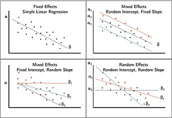
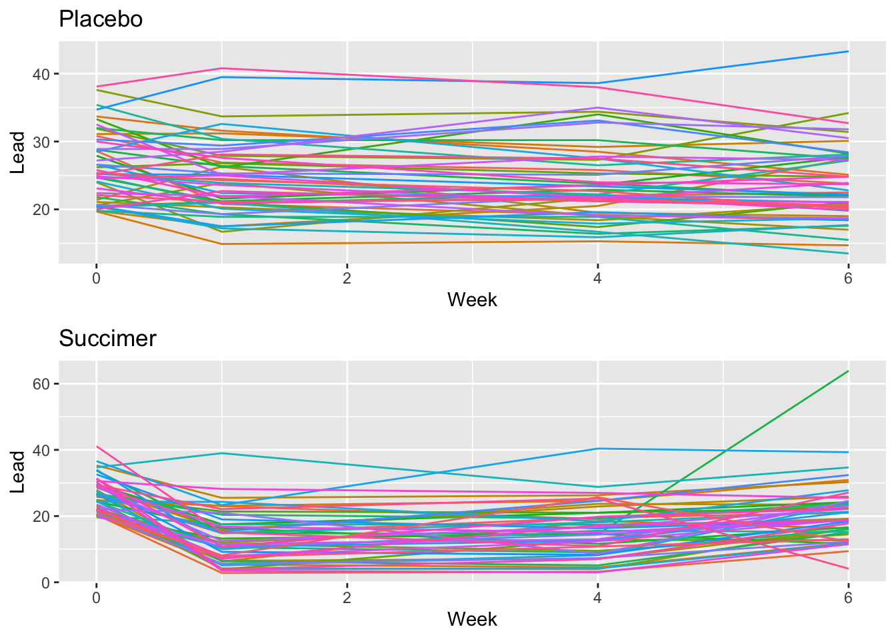
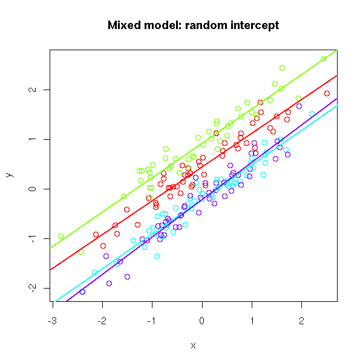
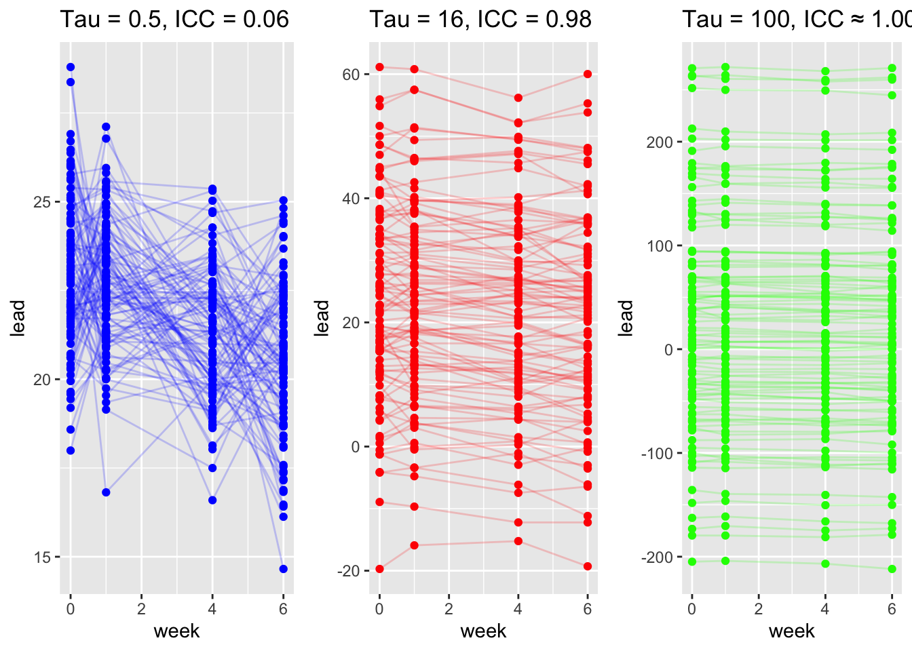
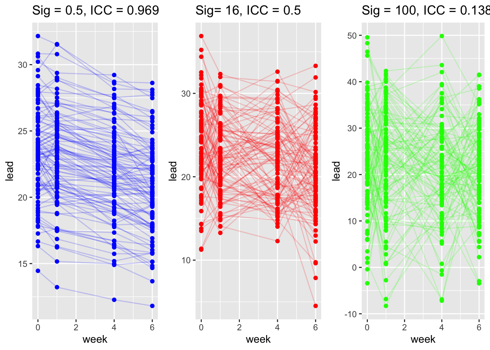

tlcdata <- readRDS("data/tlc.RDS")
head(tlcdata) id treatment week lead
1 1 placebo 0 30.8
101 1 placebo 1 26.9
201 1 placebo 4 25.8
301 1 placebo 6 23.8
2 2 succimer 0 26.5
102 2 succimer 1 14.8
Reading
In this module, you’ll learn how to model data with hierarchical or correlated structures using linear mixed models (LMMs). These models extend standard regression to handle repeated measures or nested data structures, commonly found in longitudinal and multilevel public health data.
After completing this module, you will be able to:
Identify when LMMs are appropriate
Distinguish between fixed and random effects
Fit and interpret random intercept and random slope models in R
Understand concepts like shrinkage, intraclass correlation, and BLUPs
Hierarchical formulation of random effects models
Correlated data structures arise when multiple observations are taken from the same unit or group: Examples include:
Ignoring this structure can lead to biased estimates and invalid inference.
Motivating Example: The TLC Study:
The Treatment of Lead-Exposed Children (TLC) was examined using a placebo-controlled randomized study of succimer (a chelating agent) in children with blood lead levels of 20-44 micrograms/dL. These data consist of four repeated measurements of blood lead levels obtained at baseline (or week 0) , week 1, week 4, and week 6 on 100 children who were randomly assigned to chelation treament with succimer or placebo.
| Variable | Description |
|---|---|
id |
child identifier |
treatment |
succimer or placebo |
week |
measurement week |
lead |
lead level (outcome) |
tlcdata <- readRDS("data/tlc.RDS")
head(tlcdata) id treatment week lead
1 1 placebo 0 30.8
101 1 placebo 1 26.9
201 1 placebo 4 25.8
301 1 placebo 6 23.8
2 2 succimer 0 26.5
102 2 succimer 1 14.8
If we ignore clustering and fit the standard linear regression (OLS): \[ \begin{align*} y_{ij}& = \beta_0 + \beta_1 x_{ij} + \epsilon_{ij}\\ \epsilon_{ij} & \overset{iid}{\sim} N(0, \sigma^2) \end{align*} \] we assume that all observations are independent.
But repeated measurements from the same child are not independent.
fit.lm = lm(lead ~ week, data = tlcdata)
summary(fit.lm)
Call:
lm(formula = lead ~ week, data = tlcdata)
Residuals:
Min 1Q Median 3Q Max
-19.775 -3.749 0.328 4.454 43.330
Coefficients:
Estimate Std. Error t value Pr(>|t|)
(Intercept) 22.9760 0.6079 37.793 <2e-16 ***
week -0.4010 0.1670 -2.401 0.0168 *
---
Signif. codes: 0 '***' 0.001 '**' 0.01 '*' 0.05 '.' 0.1 ' ' 1
Residual standard error: 7.966 on 398 degrees of freedom
Multiple R-squared: 0.01428, Adjusted R-squared: 0.0118
F-statistic: 5.765 on 1 and 398 DF, p-value: 0.01681What assumptions of OLS are we violating?
\(\hat{\beta}_1\) is an unbiased and consistent estimator of \(\beta_1\).
Errors are not independent which leads to incorrect standard error estimates.
\(\sigma^2\) conflates within and between child variability.
Limitations: You cannot forecast individual trajectories.
LMMs are extensions of regression in which intercepts and/or slopes are allowed to vary across individual units. They were developed to deal with correlated and/or nested data.
Taking our motivating example, we can assign a separate intercept for each child:
\[ \begin{align*} y_{ij} &= \beta_{0i} + \beta_1 x_{ij} + \epsilon_{ij}, \\ \epsilon_{ij} & \overset{iid}{\sim} N(0, \sigma^2) \end{align*} \]
Interpretation:
| Effect Type | Definition | Example |
|---|---|---|
| Fixed | Population-average effects | Effect of week on lead |
| Random | Child-specific deviation | Child-specific intercept \(\beta_{0i}\) |
| Random | Child-week deviation | Child-week error \(\epsilon_{ij}\) |
A limitation to this approach is we are estimating a lot of parameters: Subject specific coefficients don’t leverage population information and have less precision because of smaller sample sizes.
In addition, we cannot forecast the outcome of a new child.

Consider the random intercept model with a vector of predictors \(x_{ij}\):
\[ \begin{align*} y_{ij} &=\mu + \theta_i + x_{ij}^T \beta + \epsilon_{ij}\\ \epsilon_{ij} & \overset{iid}{\sim} N(0, \sigma^2)\\ \theta_i & \overset{iid}{\sim} N(0, \tau^2) \\ \theta_i& \perp \epsilon_{ij} \end{align*} \]
\(\mu\) = overall intercept (population mean when \(x_{ij}=0\)).
\(\theta_i\) = child specific difference from \(\mu\).
\(\beta_{0i} = \mu + \theta_i\) participant specific intercept or child specific average.
\(\beta\) = coefficient that does not vary across participants.
\(\tau^2\) = between group variability.
\(\sigma^2\) = residual variance or within group variability “measurement error”.
Model Assumptions:
We assume the random intercept and random errors are independent \(\theta_i \perp \epsilon_{ij}\) for all \(i\) and \(j\).
We assume the random intercepts are normally distributed \(\theta_i \sim N(0, \tau^2)\).
Use the expandable panels below to explore key statistical properties and their derivations.
library(lmerTest)
fit.randomeffects = lmer(lead ~ week + (1|id), data = tlcdata)
summary(fit.randomeffects)Linear mixed model fit by REML. t-tests use Satterthwaite's method [
lmerModLmerTest]
Formula: lead ~ week + (1 | id)
Data: tlcdata
REML criterion at convergence: 2695.1
Scaled residuals:
Min 1Q Median 3Q Max
-2.6337 -0.3461 0.0601 0.4131 6.1167
Random effects:
Groups Name Variance Std.Dev.
id (Intercept) 29.63 5.444
Residual 33.98 5.829
Number of obs: 400, groups: id, 100
Fixed effects:
Estimate Std. Error df t value Pr(>|t|)
(Intercept) 22.9760 0.7030 161.6442 32.683 < 2e-16 ***
week -0.4010 0.1222 299.0000 -3.281 0.00116 **
---
Signif. codes: 0 '***' 0.001 '**' 0.01 '*' 0.05 '.' 0.1 ' ' 1
Correlation of Fixed Effects:
(Intr)
week -0.478Model Interpretation: The fixed effect captures the global or average change in lead level for every one unit change in time, i.e., from week 1 to week 2, \(\hat{\beta}_1 = -0.410\), meaning that there is an average 0.4 decrease in lead for every unit increase in week which was found to be statistically significant \(p<0.01\).
Now the intercept 22.97 corresponds to the population-average lead at week 0.
The SE of the slope \(se(\hat{\beta_1}) = 0.122\) capturing uncertainty associated with the estimate.
The random effect of child \(\beta_{0i}\) allows for child-specific random intercepts, where the variance of the intercepts is 29.63.
A random intercept model is also known as a two-level variance component model:
\(\theta_i\) is a random intercept shared by all observations in group \(i\) and has a “intercept-specific” error \(\tau^2\).
\(\epsilon_{ij}\) is the individual-level residual error.
We now derive the covariance between two observations from the same person \(i\). Let’s expand both observations:
\[ \begin{aligned} y_{ij} &= \mu + \theta_i + \beta x_{ij} + \epsilon_{ij} \\ y_{ik} &= \mu + \theta_i + \beta x_{ik} + \epsilon_{ik} \end{aligned} \]
Then,
\[ \text{Cov}(y_{ij}, y_{ik}) = \text{Cov}(\theta_i + \epsilon_{ij},\ \theta_i + \epsilon_{ik}) \]
Using bilinearity of covariance:
\[ = \text{Cov}(\theta_i, \theta_i) + \text{Cov}(\theta_i, \epsilon_{ik}) + \text{Cov}(\epsilon_{ij}, \theta_i) + \text{Cov}(\epsilon_{ij}, \epsilon_{ik}) \]
Now plug in the assumptions:
So:
\[ \text{Cov}(y_{ij}, y_{ik}) = \tau^2\quad ✅ \] Observations from the same group/cluster share the same random intercept \(\theta_i\), which introduces positive correlation.
Let’s derive the total (marginal) variability of an individual observation \(y_{ij}\) around the population mean, after averaging over the distribution of subjects. By the law of total variance:
Total variance = between-group variance + within-group variance. \[ \text{Var}(y_{ij}) = \text{Var}(\theta_i + \epsilon_{ij}) = \tau^2 + \sigma^2\quad ✅ \] ————————————————————————
The covariance between two different subjects is assumed to be zero: \[ \text{Cov}(y_{ij}, y_{kj}) = Cov(\theta_i + \epsilon_{ij}, \theta_k + \epsilon_{kj}) = 0 \quad ✅ \]
Suppose we observe two individuals, each measured at three time points:
The marginal covariance matrix \(\text{Cov}(\mathbf{y})\) for the stacked vector:
\[ \mathbf{y} = \begin{bmatrix} y_{11} \\ y_{12} \\ y_{13} \\ y_{21} \\ y_{22} \\ y_{23} \end{bmatrix} \]
is:
\[ \text{Cov}(\mathbf{y}) = \begin{bmatrix} \tau^2 + \sigma^2 & \tau^2 & \tau^2 & 0 & 0 & 0 \\ \tau^2 & \tau^2 + \sigma^2 & \tau^2 & 0 & 0 & 0 \\ \tau^2 & \tau^2 & \tau^2 + \sigma^2 & 0 & 0 & 0 \\ 0 & 0 & 0 & \tau^2 + \sigma^2 & \tau^2 & \tau^2 \\ 0 & 0 & 0 & \tau^2 & \tau^2 + \sigma^2 & \tau^2 \\ 0 & 0 & 0 & \tau^2 & \tau^2 & \tau^2 + \sigma^2 \\ \end{bmatrix} \]
This structure is known as compound symmetry within each subject (constant pairwise correlation), and block-diagonal across subjects.
Consider the mixed model with random intercepts for \(n\) groups and define \(N = \sum_{i=1}^n r_i\).
\[ \mathbf{y} = \mathbf{Z} \mathbf{\theta} + \mathbf{X}\mathbf{\beta} + \mathbf{\epsilon} \]
where
\(\mathbf{y} = N \times 1\) vector of response
\(\mathbf{Z} = N \times n\) design matrix of indicator variables for each group.
\(\mathbf{\theta} = n \times 1\) vector of random intercepts.
\(\mathbf{X} = N\times p\) design matrix of fixed effects (including overall intercept).
\(\mathbf{\beta} = p\times 1\) vector of fixed effects.
\(\mathbf{\epsilon} = N \times 1\) vector of residual error.
We simulate data for child \(i\) in week \(j\) using the formula below. We denote simulated quantities using \(\tilde{.}\). Note below we vary the degree of between subject variance (heterogeneity) \(\tau^2\).
\[ \begin{align*} \tilde{y}_{ij} & = 22.976 - 0.4 \times \text{week}_{ij} + \tilde{\theta}_i + \tilde{\epsilon}_{ij}\\ \tilde{\theta}_i & \sim N(0, \tau^2), \quad \tau = (0.5, 16, 100)\\ \tilde{\epsilon}_{ij} & \sim N(0, \sigma^2), \quad \sigma^2 = 4 \end{align*} \]

We simulate repeated outcomes for child \(i\) at week \(j\) again under a random–intercept model with a fixed trend over time and three different levels of within-child noise \(\sigma^2\):
\[ \begin{align*} \tilde{y}_{ij} & = 22.976 - 0.4 \times \text{week}_{ij} + \tilde{\theta}_i + \tilde{\epsilon}_{ij}\\ \tilde{\theta}_i & \sim N(0, \tau^2), \quad \tau^2 = 16\\ \tilde{\epsilon}_{ij} & \sim N(0, \sigma^2), \quad \sigma^2 = (0.5, 16, 100) \end{align*} \]

| Section | Description |
|---|---|
| Motivation | Repeated/clustered data (e.g., TLC: children measured over weeks) create within-subject correlation that standard OLS ignores. |
| Why not OLS? | OLS fit \(y_{ij}=\beta_0+\beta_1 x_{ij}+\epsilon_{ij}\) incorrectly assumes independence. Slope can be unbiased, but standard errors are wrong; \(\sigma^2\) mixes within/between variability. |
| Model (random intercept) | \(y_{ij}=\mu+\theta_i+x_{ij}^{\top}\beta+\epsilon_{ij}\), with \(\epsilon_{ij}\sim N(0,\sigma^2)\), \(\theta_i\sim N(0,\tau^2)\), and \(\theta_i\perp \epsilon_{ij}\). \(\mu\) = overall intercept; \(\theta_i\) = child-specific intercept shift; \(\beta\) = fixed-effect slopes. |
| Mean & variance | Population mean: \(\mathbb{E}[y_{ij}]=\mu+\beta^{\top}x_{ij}\). Conditional mean: \(\mathbb{E}[y_{ij}\mid \theta_i]=(\mu+\theta_i)+\beta^{\top}x_{ij}\). Marginal variance: \(\operatorname{Var}(y_{ij})=\tau^2+\sigma^2\). Conditional variance: \(\operatorname{Var}(y_{ij}\mid \theta_i)=\sigma^2\). |
| Covariances | Same subject, different times: \(\operatorname{Cov}(y_{ij},y_{ik})=\tau^2\) for \(j\neq k\). Different subjects: \(\operatorname{Cov}(y_{ij},y_{kj})=0\) for \(i\neq k\). Implies compound symmetry within subject and block-diagonal overall covariance. |
| Matrix form | \(y=Z\theta+X\beta+\epsilon\), where \(Z\) maps observations to subject intercepts, \(X\) is fixed-effects design. |
| Intraclass correlation | \(\rho=\dfrac{\tau^2}{\tau^2+\sigma^2}\): proportion of total variance due to between-subject differences; larger \(\tau^2\) or smaller \(\sigma^2\) \(\Rightarrow\) larger within-subject correlation. |
| Simulation takeaways | Varying \(\tau^2\) (between-subject variance) changes separation between subject-specific lines and increases ICC. Varying \(\sigma^2\) (within-subject noise) widens scatter around each subject’s line and reduces ICC. |
| Fitting & interpretation (R) | lmer(lead ~ week + (1|id), data = tlcdata) fits the random-intercept model. Fixed effect of week = average change per week; \(\hat\tau^2\) = between-child variance; \(\hat\sigma^2\) = within-child variance. |